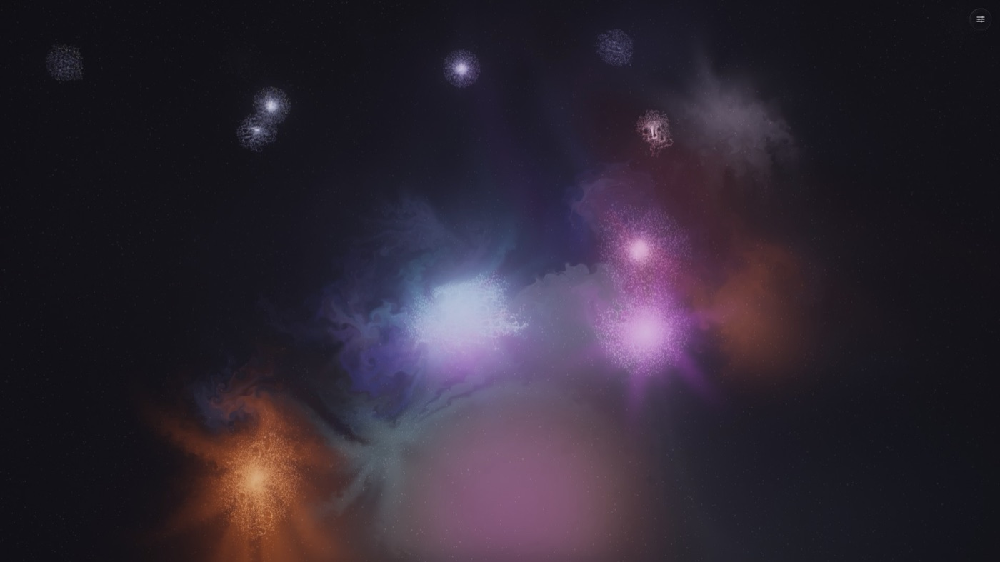
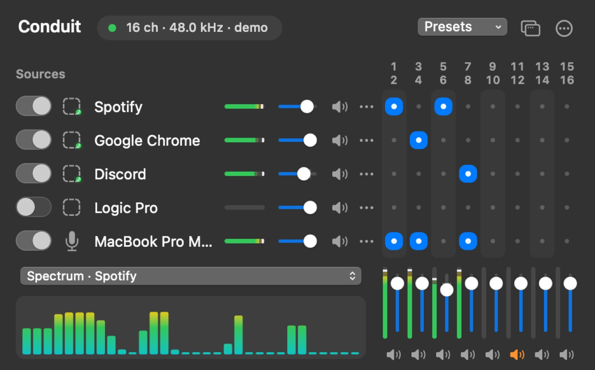
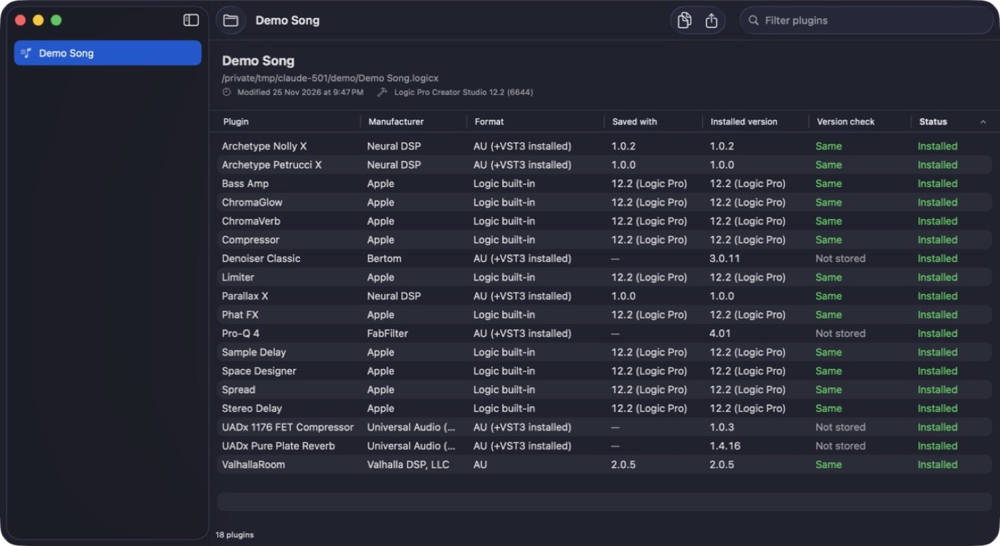
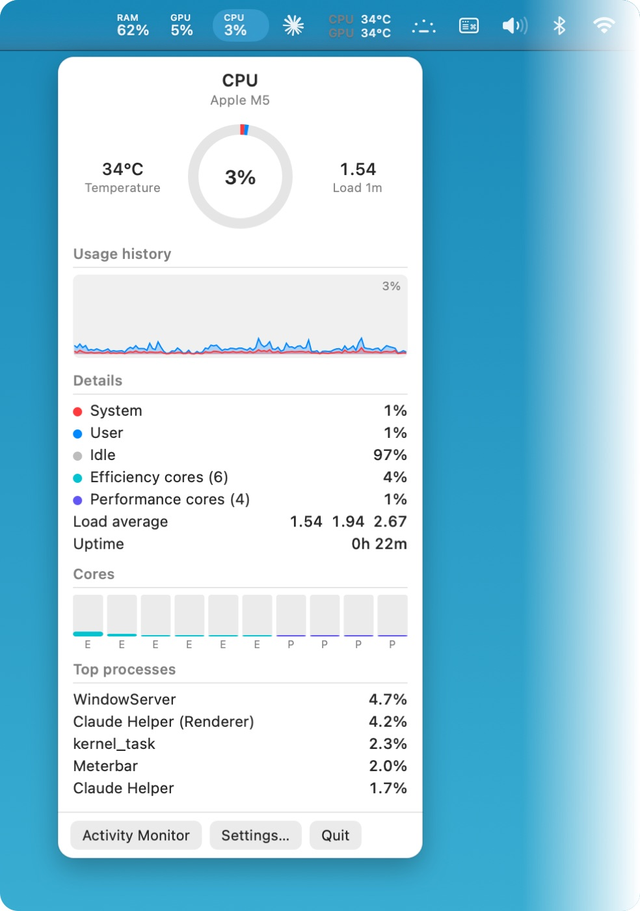
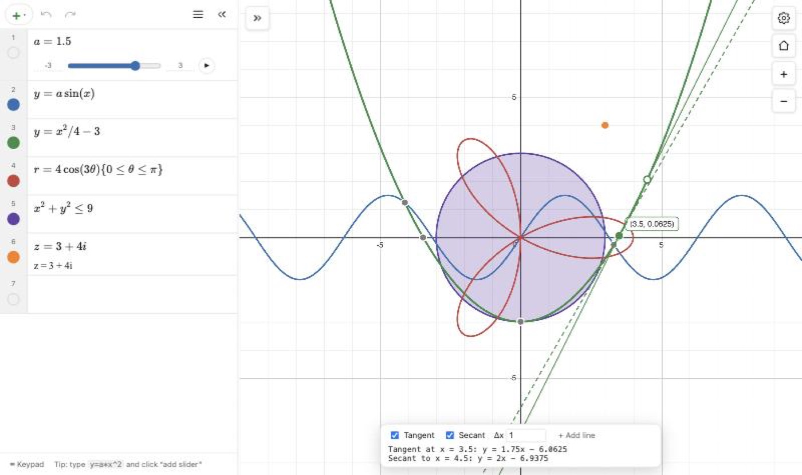

Featured projects

Real-time synesthetic visuals for music production. Audio is analysed for notes, chords, key, tempo, and mood, then drives a GPU fluid simulation with HDR light and a Liquid Glass UI.

Free, open-source virtual audio router and mixer for macOS. A 16-channel virtual device with per-app capture via Core Audio Process Taps, a routing matrix, and 60 fps meters.

Lists every plugin a DAW project uses, with the version it was saved with against what is installed now. Reads Logic Pro, MainStage, Ableton Live, REAPER, FL Studio, Pro Tools, Cubase, Nuendo, Bitwig, Studio One and more. Built by reverse-engineering each DAW's project format; read-only and offline.

Tiny native macOS menu bar system monitor: CPU, GPU, memory, SMC thermal sensors, disk, network, and battery in ~12 MB of RAM and 0.3% idle CPU, as a 0.4 MB universal binary.

Desmos-style graphing calculator with an offline AI. Ask a question or word problem and get an editable graph, with no internet or API key. Runs in the browser and as a native Mac app that bundles llama.cpp. 2D and 3D graphing, complex domain colouring, geometry and matrix modes, and regression, with every result checked by the calculator itself.
AirDrop-style file sharing across Mac, iPhone, Android, and Windows (LocalSend v2 compatible). Apple peer-to-peer Wi-Fi (AWDL), Bluetooth LE wake-up for locked iPhones, and TLS-encrypted streaming.
Use a 27" 5K iMac as an extended display at its maximum 5K resolution (5120×2880) over Wi-Fi, with no third-party streaming apps. Hardware HEVC encoding, zero idle usage via launchd socket activation, a decoupled 120 Hz cursor, and optional 4:4:4 colour for crisp text.
Driver-free, class-compliant 8-button USB MIDI foot controller for guitar rigs and DAWs, with hardware debounce and configurable Program Change / Control Change messages.
Technical stack
Apple & Systems
Swift, AppKit, SwiftUI, ScreenCaptureKit, VideoToolbox, Core Audio, CoreGraphics, IOKit / SMC, launchd
Cross-platform & Networking
Kotlin (Jetpack Compose), C# / .NET 8, Bluetooth LE, AWDL / Wi-Fi Direct, TLS
Graphics & Audio
WebGL2, GLSL, FFT-based analysis, MIDI
Embedded & Scientific
C++ (Arduino / ATmega32U4), Python (NumPy, SymPy, PySide6, PyQtGraph)